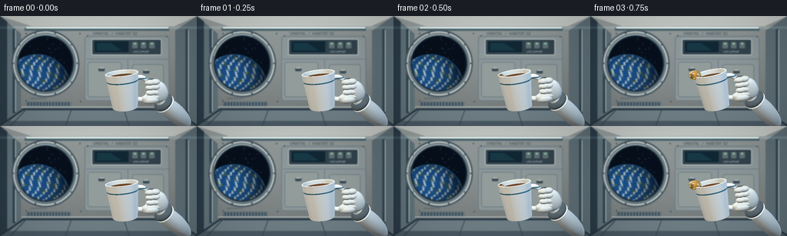
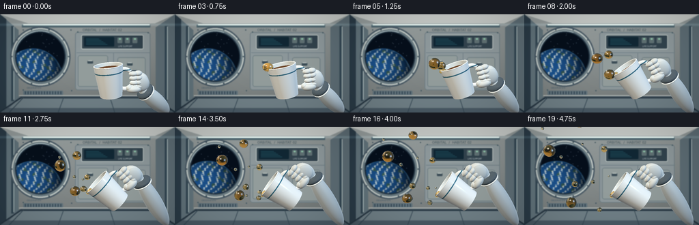

CODING AGENTS AS PIXEL WORLD MODELS
traex/GPT-6.1-Sol · mechanics_0003
点击播放 · 原生 RGB 像素
逐轮保存的候选
回放视频、检查图与代码变化。
每份候选均可单独播放。实际图片检查记录在下方工具轨迹中。
候选 01播放与检查图
点击播放 · 原生 RGB 像素


展开代码变化
--- 上一保存版本
+++ 本次保存版本
@@ -0,0 +1,388 @@
+from pathlib import Path
+import math
+import numpy as np
+from PIL import Image, ImageDraw, ImageFont, ImageFilter
+from artifact_io import save
+
+ROOT=Path(__file__).resolve().parent
+W,H=256,144
+SS=3
+RW,RH=W*SS,H*SS
+rng=np.random.default_rng(19)
+
+def norm(x):
+ return x / np.maximum(np.linalg.norm(x,axis=-1,keepdims=True),1e-12)
+def srgb(x):
+ return np.where(x<=.0031308,12.92*x,1.055*np.maximum(x,0)**(1/2.4)-.055)
+def linear(x):
+ return np.where(x<=.04045,x/12.92,((x+.055)/1.055)**2.4)
+
+# Quiet, occupied orbital laboratory, drawn at supersampled resolution.
+def background():
+ ww,hh=RW,RH
+ yy,xx=np.mgrid[0:hh,0:ww]; X=xx/SS;Y=yy/SS
+ b=np.zeros((hh,ww,3),float)
+ lum=.84-.0014*Y+.045*np.exp(-((X-70)/90)**2)
+ for j,c in enumerate([171,182,184]):b[:,:,j]=c*lum
+ b+=rng.normal(0,.38,(hh,ww,1))
+ im=Image.fromarray(np.uint8(np.clip(b,0,255)))
+ d=ImageDraw.Draw(im)
+ def poly(points,fill,outline=None,width=1):
+ p=[(int(x*SS),int(y*SS)) for x,y in points];d.polygon(p,fill=fill)
+ if outline:d.line(p+[p[0]],fill=outline,width=int(width*SS))
+ def line(p,fill,width=1):d.line([(int(x*SS),int(y*SS))for x,y in p],fill=fill,width=max(1,int(width*SS)))
+ def box(b,fill,outline=None,r=0,width=1):
+ b=tuple(int(x*SS)for x in b)
+ if r:d.rounded_rectangle(b,r*SS,fill=fill,outline=outline,width=width*SS)
+ else:d.rectangle(b,fill=fill,outline=outline,width=width*SS)
+ # Receding ribs and floor panels.
+ poly([(0,0),(41,13),(227,13),(256,0)],(193,200,199))
+ poly([(0,0),(27,23),(27,125),(0,144)],(97,116,126))
+ poly([(0,0),(9,7),(9,139),(0,144)],(43,60,73))
+ poly([(256,0),(228,19),(228,125),(256,144)],(93,110,119))
+ poly([(0,144),(30,120),(229,120),(256,144)],(73,90,102))
+ poly([(31,121),(224,121),(240,137),(13,137)],(111,128,137))
+ line([(0,143),(31,122),(223,122),(256,143)],(36,52,65),2)
+ line([(28,119),(225,119)],(204,211,209),1)
+ for x in [34,93,161,221]:line([(x,122),(x+(x-128)*.22,144)],(50,69,82),1)
+ for x in [18,243]:
+ line([(x,17),(x,127)],(52,72,85),4)
+ line([(x+2,18),(x+2,125)],(190,208,210),1)
+ line([(32,17),(220,17)],(76,100,111),4)
+ line([(34,15),(219,15)],(224,237,233),2)
+ box((110,26,220,111),(139,152,157),(105,123,132),4)
+ line([(112,56),(219,56)],(95,115,127),.7)
+ line([(166,57),(166,111)],(97,116,128),.7)
+ for b in [(114,60,158,106),(172,63,213,109)]:
+ box(b,(145,157,158),(107,125,132),3)
+ x,y,x2,y2=b
+ box((x+14,y+8,x+22,y+12),(59,77,88),r=1)
+ line([(x+15,y+8),(x+21,y+8)],(206,215,211),1)
+ box((119,30,210,51),(50,67,78),(191,202,201),2)
+ box((123,33,167,47),(17,39,53),r=1)
+ for i in range(5):line([(126,36+i*2),(145+i*3,36+i*2)],(59,141,157),.5)
+ for i in range(3):
+ box((172+i*11,34,179+i*11,42),(95,113,117),r=1)
+ box((174+i*11,35,177+i*11,37),(143,201,174),r=1)
+ # A thick round pressure-window frame.
+ cx,cy,rad=59,62,40
+ for rr,col in [(44,(71,88,101)),(42,(192,203,201)),(40,(105,123,132)),(37,(40,58,73)),(35.5,(13,26,40))]:
+ d.ellipse(((cx-rr)*SS,(cy-rr)*SS,(cx+rr)*SS,(cy+rr)*SS),fill=col)
+ # Procedural Earth seen through the glass, with cloud ribbons and blue limb.
+ arr=np.array(im).astype(float); mask=(X-cx)**2+(Y-cy)**2<35.2**2
+ space=np.zeros_like(arr);space[:]=[6,15,28]
+ ex,ey,er=48,93,43
+ dx=(X-ex)/er;dy=(Y-ey)/er; rr=dx*dx+dy*dy
+ globe=rr<1
+ zz=np.sqrt(np.maximum(0,1-rr))
+ lighting=np.clip(.3+.8*(-dx*.36-dy*.48+zz*.76),.07,1)
+ land=(np.sin(dx*14+np.sin(dy*11)*1.6)+np.sin(dy*19-dx*8)+.6*np.sin(dx*28+dy*21))>1.36
+ ocean=np.stack([18+10*zz,60+23*zz,107+38*zz],-1)
+ ocean[land]=[52,89,87]
+ clouds=np.sin(dx*24+dy*15+2*np.sin(dy*7)) + .52*np.sin(dx*53-dy*26)+.3*np.cos(dy*89+dx*31)
+ cloud=np.clip((clouds-.35)*1.1,0,.87)*np.clip(.4+zz,0,1)
+ earth=ocean*(1-cloud[:,:,None])+np.array([207,220,220])*cloud[:,:,None]
+ earth*=lighting[:,:,None]
+ limb=np.exp(-np.maximum(1-rr,0)/.027)
+ earth=earth*(1-limb[:,:,None]*.65)+np.array([63,144,210])*limb[:,:,None]*.65
+ space[globe]=earth[globe]
+ atmosphere=(rr>=1)&(rr<1.05)
+ space[atmosphere]+=np.exp(-(rr[atmosphere]-1)*75)[:,None]*np.array([18,49,75])
+ for _ in range(29):
+ x=rng.uniform(25,94);y=rng.uniform(25,69)
+ if (x-ex)**2+(y-ey)**2>er**2:
+ ix,iy=int(x*SS),int(y*SS);space[iy:iy+2,ix:ix+2]=[141,161,180]
+ arr[mask]=space[mask]
+ im=Image.fromarray(np.uint8(np.clip(arr,0,255)));d=ImageDraw.Draw(im)
+ for a in np.linspace(0,2*np.pi,10,endpoint=False):
+ x=cx+41.5*np.cos(a);y=cy+41.5*np.sin(a)
+ d.ellipse(((x-.9)*SS,(y-.9)*SS,(x+.9)*SS,(y+.9)*SS),fill=(48,67,79))
+ line([(x-.35,y),(x+.35,y)],(143,156,164),.4)
+ d.arc(((cx-38)*SS,(cy-38)*SS,(cx+38)*SS,(cy+38)*SS),195,290,fill=(193,213,218),width=SS)
+ # Safety markers, air vents and small physical fasteners.
+ for x,y in [(34,23),(104,23),(34,111),(105,112),(114,26),(217,27),(217,113)]:
+ d.ellipse(((x-.7)*SS,(y-.7)*SS,(x+.7)*SS,(y+.7)*SS),fill=(59,82,94))
+ box((34,112,92,118),(96,115,126),r=1)
+ for x in range(37,91,4):line([(x,113),(x,117)],(34,54,70),1)
+ try:
+ font=ImageFont.truetype('/usr/share/fonts/truetype/dejavu/DejaVuSans.ttf',5*SS)
+ small=ImageFont.truetype('/usr/share/fonts/truetype/dejavu/DejaVuSans.ttf',3*SS)
+ d.text((121*SS,20*SS),'ORBITAL / HABITAT 02',font=font,fill=(57,77,88))
+ d.text((173*SS,45*SS),'LIFE SUPPORT',font=small,fill=(185,199,204))
+ d.text((39*SS,106*SS),'OBSERVATION',font=small,fill=(74,93,108))
+ except OSError:pass
+ # Soft lamp washes.
+ arr=np.array(im).astype(float)
+ arr+=np.exp(-((Y-15)/1.7)**2)[:,:,None]*np.array([19,24,26])
+ arr*= (1-.15*((X-128)/158)**2-.10*((Y-72)/100)**2)[:,:,None]
+ return Image.fromarray(np.uint8(np.clip(arr,0,255))).filter(ImageFilter.GaussianBlur(.65*SS))
+
+BG=background()
+bg_lin=linear(np.array(BG)/255.)
+# Fixed gently elevated cinematic camera.
+cam=np.array([0.,2.9,9.2]); target=np.array([0.,0.,0.])
+fwd=norm(target-cam);right=norm(np.cross(fwd,[0,1,0]));up=np.cross(right,fwd)
+focal=9.5; view_width=7.8
+xx,yy=np.meshgrid((np.arange(RW)+.5)/RW-.5,.5-(np.arange(RH)+.5)/RH)
+dirs=norm(fwd*focal+xx[:,:,None]*view_width*right+yy[:,:,None]*(view_width*H/W)*up).reshape(-1,3)
+orig=np.broadcast_to(cam,dirs.shape)
+
+# Background radiance with ceiling strips reflected in ceramic and water.
+def environment(d):
+ y=d[:,1];z=d[:,2];x=d[:,0]
+ out=np.tile([.14,.19,.24],(len(d),1))
+ out+=np.maximum(y,0)[:,None]*np.array([.23,.25,.25])
+ a=np.exp(-((y-.70)/.11)**2-((x+.35)/.45)**2)*np.clip((z+.8)*2,0,1)
+ out+=a[:,None]*np.array([2.3,2.05,1.6])
+ b=np.exp(-((x-.75)/.14)**2-((y-.10)/.62)**2)
+ out+=b[:,None]*np.array([.6,.9,1.3])
+ c=np.exp(-((y-.20)/.08)**2-((x+.60)/.30)**2)
+ out+=c[:,None]*np.array([.28,.47,.75])
+ return out
+
+def bg_sample(o,d):
+ # Intersect the virtual background projection plane, far behind the objects.
+ den=d@fwd
+ t=(focal+4-(o-cam)@fwd)/np.maximum(den,.01)
+ p=o+d*t[:,None]-cam
+ px=(p@right)/np.maximum(p@fwd,.01)*focal/view_width+.5
+ py=.5-(p@up)/np.maximum(p@fwd,.01)*focal/(view_width*H/W)
+ u=np.clip((px*RW).astype(int),0,RW-1);v=np.clip((py*RH).astype(int),0,RH-1)
+ return bg_lin[v,u]
+
+class Scene:
+ def __init__(self,t):
+ self.t=t
+ ease=lambda a:a*a*(3-2*a)
+ tilt=np.deg2rad(7+49*ease(np.clip(t/3.7,0,1)))
+ cx,sx=np.cos(-.12),np.sin(-.12)
+ Rz=np.array([[np.cos(tilt),-np.sin(tilt),0],[np.sin(tilt),np.cos(tilt),0],[0,0,1]])
+ Rx=np.array([[1,0,0],[0,cx,-sx],[0,sx,cx]])
+ self.R=Rz@Rx
+ self.center=np.array([.97,-.60,.55])+np.array([-.11*ease(min(t/4.5,1)),.04*np.sin(t*.6),0])
+ self.ell=[]
+ self.build_hand()
+ self.liquid=[]
+ self.make_liquid()
+ def world(self,p):return np.asarray(p)@self.R.T+self.center
+ def hand(self,p,r,mat=3):self.ell.append((self.world(p),np.array(r),self.R,mat))
+ def build_hand(self):
+ # A padded astronaut glove, with individual curled finger lobes.
+ wrist=self.world([1.36,-.52,.17]); anchor=np.array([3.65,-2.15,.42])
+ axis=norm(wrist-anchor); ex=norm(np.cross([0,0,1],axis));ez=np.cross(ex,axis)
+ R=np.stack([ex,axis,ez],axis=1)
+ mid=(wrist+anchor)/2
+ self.ell.append((mid,np.array([.37,np.linalg.norm(wrist-anchor)/2+.16,.35]),R,4))
+ self.ell.append((wrist-axis*.17,np.array([.405,.16,.38]),R,5))
+ self.ell.append((wrist-axis*.27,np.array([.41,.08,.385]),R,3))
+ self.hand([1.32,-.21,.17],[.33,.44,.265],3)
+ self.hand([1.34,-.20,.37],[.285,.315,.115],4)
+ for j,y in enumerate([.26,.07,-.13,-.31]):
+ self.hand([1.07,y,.21],[.21,.115,.21],5)
+ self.hand([.99,y+.005,.355],[.19,.106,.155],3)
+ self.hand([1.18,y,.34],[.18,.115,.155],3)
+ self.hand([.96,-.40,.37],[.31,.16,.20],3)
+ self.hand([.78,-.34,.36],[.15,.135,.145],3)
+ def make_liquid(self):
+ # Release events have independent, constant momentum: no falling acceleration.
+ # The source remains attached briefly before the thin neck pinches apart.
+ t=self.t
+ events=[(.52,[-.53,.66,.13],[-.68,.32,.05],.235),
+ (.95,[-.53,.68,.14],[-.41,.66,.02],.180),
+ (1.42,[-.54,.65,.22],[-.57,-.19,.15],.215),
+ (1.92,[-.53,.68,.20],[-.14,.62,.16],.125),
+ (2.30,[-.54,.64,.22],[-.70,.10,-.04],.135),
+ (2.85,[-.55,.66,.24],[-.30,-.40,.09],.105),
+ (.85,[-.53,.67,.18],[-.79,.58,.0],.059),
+ (1.70,[-.54,.66,.15],[-.72,.45,.12],.070),
+ (2.1,[-.54,.66,.23],[-.48,.75,.06],.052),
+ (2.55,[-.55,.66,.18],[-.84,-.25,.05],.064),
+ (3.18,[-.55,.66,.21],[-.53,.42,.14],.085),
+ (3.45,[-.55,.66,.21],[-.10,.72,.09],.043)]
+ for j,(birth,lp,velocity,r) in enumerate(events):
+ age=t-birth
+ if age<0:continue
+ # Source position at release; calculate rotation at that instant.
+ release=Scene.pose_at(birth)
+ start=np.asarray(lp)@release[0].T+release[1]
+ grow=np.clip(age/.38,0,1)
+ p=start+np.asarray(velocity)*max(age-.10,0)
+ p[2]+=.012*np.sin(age*2+j)
+ rad=r*(.25+.75*np.sin(grow*np.pi/2))
+ wob=.08*np.cos(age*4+j)
+ stretch=1+.23*np.exp(-age*1.8)
+ radii=np.array([rad*stretch,rad*(1-wob),rad*(1+wob)/stretch])
+ self.liquid.append((p,radii,np.eye(3),6))
+ # Wet meniscus sitting just inside the lip, and an attached globule during tilting.
+ if t>.40:
+ rad=.105+.055*np.sin(np.clip((t-.4)/1.0,0,1)*np.pi/2)
+ p=self.world([-.515,.63,.13])
+ self.liquid.append((p,np.array([rad,.10,rad]),self.R,6))
+ @staticmethod
+ def pose_at(t):
+ a=np.clip(t/3.7,0,1);a=a*a*(3-2*a)
+ th=np.deg2rad(7+49*a);c,s=np.cos(-.12),np.sin(-.12)
+ Rz=np.array([[np.cos(th),-np.sin(th),0],[np.sin(th),np.cos(th),0],[0,0,1]])
+ Rx=np.array([[1,0,0],[0,c,-s],[0,s,c]])
+ b=np.clip(t/4.5,0,1);b=b*b*(3-2*b)
+ return Rz@Rx,np.array([.97-.11*b,-.60+.04*np.sin(t*.6),.55])
+ def intersect(self,o,d,water=True):
+ n=len(o);best=np.full(n,np.inf);N=np.zeros((n,3));mat=np.full(n,-1,int);loc=np.zeros((n,3));shape=np.full(n,-1,int)
+ def add(dist,no,ma,pp,idx=-1):
+ sel=(dist>1e-4)&(dist<best)
+ best[sel]=dist[sel];N[sel]=no[sel];mat[sel]=ma;loc[sel]=pp[sel];shape[sel]=idx
+ lo=(o-self.center)@self.R;ld=d@self.R
+ # Inner and outer truncated cones of the ceramic cup.
+ for k,b,ymin,ymax,inward in [(.102,.568,-.70,.66,False),(.111,.514,-.61,.66,True)]:
+ A=ld[:,0]**2+ld[:,2]**2-(k*ld[:,1])**2
+ B=2*(lo[:,0]*ld[:,0]+lo[:,2]*ld[:,2]-(b+k*lo[:,1])*k*ld[:,1])
+ C=lo[:,0]**2+lo[:,2]**2-(b+k*lo[:,1])**2
+ disc=B*B-4*A*C;sq=np.sqrt(np.maximum(disc,0))
+ for sg in [-1,1]:
+ tt=(-B+sg*sq)/(2*np.where(abs(A)>1e-10,A,1e-10));p=lo+ld*tt[:,None]
+ valid=(disc>=0)&(p[:,1]>=ymin)&(p[:,1]<=ymax)
+ tt=np.where(valid,tt,np.inf)
+ nl=norm(np.stack([p[:,0],-k*(b+k*p[:,1]),p[:,2]],-1))*(-1 if inward else 1)
+ add(tt,nl@self.R.T,2 if inward else 0,p)
+ # Ceramic rim and inside bottom, with a recessed amber liquid surface.
+ for y,ri,ro,ma,sg in [(.66,.585,.637,0,1),(-.70,0,.497,0,-1),(-.60,0,.447,2,1),(.52-.020*self.t,0,.57-.006*self.t,7,1)]:
+ tt=(y-lo[:,1])/np.where(abs(ld[:,1])>1e-8,ld[:,1],1e-8)
+ p=lo+ld*tt[:,None];rr=p[:,0]**2+p[:,2]**2
+ valid=(rr>=ri*ri)&(rr<=ro*ro)
+ nl=np.tile([0,sg,0],(n,1))@self.R.T
+ add(np.where(valid,tt,np.inf),nl,ma,p)
+ # Soft round lip and oval ceramic handle; analytic SDF restricted by bounds.
+ for mode in [0,1]:
+ cent=np.array([0,.66,0]) if mode==0 else np.array([.65,-.02,0])
+ bound=.72 if mode==0 else .61
+ q=lo-cent;b=np.sum(q*ld,axis=1);c=np.sum(q*q,axis=1)-bound*bound;dd=b*b-c
+ hits=(dd>=0)&(-b+np.sqrt(np.maximum(dd,0))>0)
+ ids=np.flatnonzero(hits)
+ if not len(ids):continue
+ st=np.maximum(-b[ids]-np.sqrt(dd[ids]),.0001);en=-b[ids]+np.sqrt(dd[ids]);st=np.minimum(st,best[ids])
+ alive=np.ones(len(ids),bool);found=np.zeros(len(ids),bool)
+ def sdf(p):
+ if mode==0:
+ return np.sqrt((np.sqrt(p[:,0]**2+p[:,2]**2)-.614)**2+(p[:,1]-.66)**2)-.025
+ q=p-cent
+ return (np.sqrt((np.sqrt((q[:,0]/.88)**2+(q[:,1]/1.10)**2)-.408)**2+q[:,2]**2)-.087)*.87
+ for _ in range(66):
+ sel=np.flatnonzero(alive)
+ if not len(sel):break
+ ip=ids[sel];p=lo[ip]+ld[ip]*st[sel,None];dist=sdf(p)
+ yes=dist<.0013;found[sel[yes]]=True;alive[sel[yes]]=False
+ st[sel[~yes]]+=np.maximum(dist[~yes],.0007)
+ alive&=(st<en)&(st<best[ids])
+ good=ids[found]
+ if len(good):
+ p=lo[good]+ld[good]*st[found,None];eps=.0007
+ ns=[]
+ for ax in range(3):
+ e=np.zeros(3);e[ax]=eps;ns.append(sdf(p+e)-sdf(p-e))
+ no=norm(np.stack(ns,axis=1))@self.R.T
+ dist=np.full(n,np.inf);nn=np.zeros((n,3));pp=np.zeros((n,3))
+ dist[good]=st[found];nn[good]=no;pp[good]=p
+ add(dist,nn,0,pp)
+ ell=self.ell+(self.liquid if water else [])
+ for j,(center,radii,R,ma) in enumerate(ell):
+ qo=(o-center)@R/radii;qd=d@R/radii
+ A=np.sum(qd*qd,axis=1);B=np.sum(qo*qd,axis=1);C=np.sum(qo*qo,axis=1)-1
+ disc=B*B-A*C
+ tt=(-B-np.sqrt(np.maximum(disc,0)))/A
+ p=qo+qd*tt[:,None]
+ nl=norm((p/radii)@R.T)
+ add(np.where(disc>=0,tt,np.inf),nl,ma,p,j)
+ return best,N,mat,loc,shape
+
+LIGHTS=[(np.array([-3.6,6.0,5.0]),np.array([1.10,1.0,.82]),.085),
+ (np.array([4.,2.2,3.0]),np.array([.43,.66,.92]),.11),
+ (np.array([-2.,1.,-3.5]),np.array([.45,.58,.67]),.10)]
+
+def opaque_shader(scene,p,n,d,mat,local):
+ v=-d;nv=np.maximum(np.sum(n*v,axis=1),.001)
+ alb=np.tile([.79,.82,.81],(len(p),1));rough=np.full(len(p),.21)
+ inner=mat==2;alb[inner]=[.70,.74,.72]
+ glove=(mat==3)|(mat==4);alb[glove]=[.66,.70,.69];rough[glove]=.67
+ arm=mat==4;alb[arm]=[.55,.61,.63]
+ dark=mat==5;alb[dark]=[.07,.095,.115];rough[dark]=.75
+ tea=mat==7;alb[tea]=[.145,.052,.008];rough[tea]=.115
+ # Blue insignia stripe and a narrow rolled edge on the ceramic.
+ stripe=(mat==0)&(local[:,1]>.36)&(local[:,1]<.405)
+ alb[stripe]=[.042,.16,.235];rough[stripe]=.25
+ # Subtle fabric grain and seam lines on the bulky sleeve.
+ weave=.985+.015*np.sin(p[:,0]*185)*np.sin(p[:,1]*170)
+ alb[glove]*=weave[glove,None]
+ # Cup inner wall has contact occlusion, not a flat white hollow.
+ ao=np.ones(len(p));ao[inner]=np.clip(.45+.43*(local[inner,1]+.6)/1.26,.4,.9)
+ ao[tea]=.70
+ ambient=(.17+.19*np.maximum(n[:,1],0)+.07*np.maximum(n[:,0],0))
+ out=alb*ambient[:,None]*ao[:,None]
+ for pos,color,r in LIGHTS:
+ l=norm(pos-p);nl=np.maximum(np.sum(n*l,axis=1),0);h=norm(l+v)
+ nh=np.maximum(np.sum(n*h,axis=1),0);vh=np.maximum(np.sum(v*h,axis=1),0)
+ a=rough**2;aa=a*a
+ D=aa/(np.pi*np.maximum((nh*nh*(aa-1)+1)**2,1e-6))
+ k=(rough+1)**2/8
+ G=nv/(nv*(1-k)+k)*nl/(nl*(1-k)+k)
+ F=.04+.96*(1-vh)**5
+ spec=D*G*F/np.maximum(4*nv*nl,.001)
+ out+=(alb*nl[:,None]*.69+np.minimum(spec,5)[:,None]*nl[:,None]*.5)*color
+ refl=d-2*np.sum(d*n,axis=1)[:,None]*n
+ fres=.035+.965*(1-nv)**5
+ out+=environment(refl)*fres[:,None]*.26
+ return np.maximum(out,0)
+
+def render(scene):
+ distance,n,mat,local,shape=scene.intersect(orig,dirs)
+ color=bg_lin.reshape(-1,3).copy();valid=mat>=0
+ ii=np.flatnonzero(valid);p=orig[ii]+dirs[ii]*distance[ii,None]
+ color[ii]=opaque_shader(scene,p,n[ii],dirs[ii],mat[ii],local[ii])
+ # Tea is a refractive liquid (IOR 1.333) with Beer-Lambert amber absorption.
+ wi=np.flatnonzero(mat==6)
+ if len(wi):
+ pp=orig[wi]+dirs[wi]*distance[wi,None];nn=n[wi];dd=dirs[wi];cos=-np.sum(dd*nn,axis=1)
+ eta=1/1.333;k=1-eta*eta*(1-cos*cos)
+ inside=norm(eta*dd+(eta*cos-np.sqrt(np.maximum(k,0)))[:,None]*nn)
+ exitp=np.empty_like(pp);exitn=np.empty_like(pp);thick=np.empty(len(wi))
+ for sj in np.unique(shape[wi]):
+ mask=shape[wi]==sj;center,radii,R,_=(scene.ell+scene.liquid)[sj]
+ start=(pp[mask]-center)@R/radii;di=inside[mask]@R/radii
+ A=np.sum(di*di,axis=1);B=np.sum(start*di,axis=1)
+ t=np.maximum(-2*B/A,.001)
+ end=pp[mask]+inside[mask]*t[:,None]
+ exitp[mask]=end;thick[mask]=t;exitn[mask]=norm(((end-center)@R/(radii*radii))@R.T)
+ en=-exitn;cos2=-np.sum(inside*en,axis=1);eta2=1.333
+ k2=1-eta2*eta2*(1-cos2*cos2)
+ outdir=norm(eta2*inside+(eta2*cos2-np.sqrt(np.maximum(k2,0)))[:,None]*en)
+ # For near-rim rays, refraction reveals real porcelain surfaces behind the tea.
+ oo=exitp+outdir*.003
+ td,tn,tm,tl,ts=scene.intersect(oo,outdir,False)
+ trans=bg_sample(oo,outdir);hit=tm>=0
+ if np.any(hit):trans[hit]=opaque_shader(scene,oo[hit]+outdir[hit]*td[hit,None],tn[hit],outdir[hit],tm[hit],tl[hit])
+ transmission=np.exp(-thick[:,None]*np.array([.72,2.9,7.9]))
+ tr=trans*transmission+np.array([.21,.058,.003])*(1-transmission)*.15
+ refl=dd-2*np.sum(dd*nn,axis=1)[:,None]*nn
+ F=.0204+(1-.0204)*(1-np.clip(cos,0,1))**5
+ liquid=tr*(1-F[:,None])+environment(refl)*F[:,None]
+ # Broad, soft rectangular highlights reveal surface curvature.
+ v=-dd
+ for pos,col,rough in LIGHTS:
+ ll=norm(pos-pp);hh=norm(ll+v)
+ nh=np.maximum(np.sum(nn*hh,axis=1),0)
+ liquid+=(nh**(180 if rough<.1 else 115))[:,None]*col*.95
+ liquid+=np.exp(-((nn[:,0]+.5)/.13)**2-((nn[:,1]-.68)/.2)**2)[:,None]*np.array([.38,.31,.18])
+ color[wi]=liquid
+ arr=np.clip(srgb(color.reshape(RH,RW,3)),0,1)
+ # Mild warm photographic grade with clean highlights, no motionless noise flicker.
+ arr=arr*np.array([1.018,1.003,.991])
+ im=Image.fromarray(np.uint8(np.clip(arr*255,0,255))).resize((W,H),Image.Resampling.LANCZOS)
+ return np.array(im)
+
+if __name__=='__main__':
+ frames=[]
+ for i in range(20):
+ frame=render(Scene(i/4))
+ frames.append(frame)
+ print('rendered',i,flush=True)
+ save(np.stack(frames).astype(np.uint8),ROOT)
+ print('Saved 20 RGB frames and video player.')
可观测工具轨迹
实际执行的命令与返回图片。
命令 1exit 0
/bin/bash -lc 'ls -la && cat prompt.txt && cat GENERATION_RULES.md && cat task_spec.json'
命令 2exit 0
/bin/bash -lc "cat artifact_io.py && python - <<'PY'
import numpy,PIL
print('numpy and PIL ready')
PY"命令 3exit 0
/bin/bash -lc "cat > generate.py <<'PY'
from pathlib import Path
import math
import numpy as np
from PIL import Image, ImageDraw, ImageFont, ImageFilter
from artifact_io import save
ROOT=Path(__file__).resolve().parent
W,H=256,144
SS=3
RW,RH=W*SS,H*SS
rng=np.random.default_rng(19)
def norm(x):
return x / np.maximum(np.linalg.norm(x,axis=-1,keepdims=True),1e-12)
def srgb(x):
return np.where(x<=.0031308,12.92*x,1.055*np.maximum(x,0)**(1/2.4)-.055)
def linear(x):
return np.where(x<=.04045,x/12.92,((x+.055)/1.055)**2.4)
# Quiet, occupied orbital laboratory, drawn at supersampled resolution.
def background():
ww,hh=RW,RH
yy,xx=np.mgrid[0:hh,0:ww]; X=xx/SS;Y=yy/SS
b=np.zeros((hh,ww,3),float)
lum=.84-.0014*Y+.045*np.exp(-((X-70)/90)**2)
for j,c in enumerate([171,182,184]):b[:,:,j]=c*lum
b+=rng.normal(0,.38,(hh,ww,1))
im=Image.fromarray(np.uint8(np.clip(b,0,255)))
d=ImageDraw.Draw(im)
def poly(points,fill,outline=None,width=1):
p=[(int(x*SS),int(y*SS)) for x,y in points];d.polygon(p,fill=fill)
if outline:d.line(p+[p[0]],fill=outline,width=int(width*SS))
def line(p,fill,width=1):d.line([(int(x*SS),int(y*SS))for x,y in p],fill=fill,width=max(1,int(width*SS)))
def box(b,fill,outline=None,r=0,width=1):
b=tuple(int(x*SS)for x in b)
if r:d.rounded_rectangle(b,r*SS,fill=fill,outline=outline,width=width*SS)
else:d.rectangle(b,fill=fill,outline=outline,width=width*SS)
# Receding ribs and floor panels.
poly([(0,0),(41,13),(227,13),(256,0)],(193,200,199))
poly([(0,0),(27,23),(27,125),(0,144)],(97,116,126))
poly([(0,0),(9,7),(9,139),(0,144)],(43,60,73))
poly([(256,0),(228,19),(228,125),(256,144)],(93,110,119))
poly([(0,144),(30,120),(229,120),(256,144)],(73,90,102))
poly([(31,121),(224,121),(240,137),(13,137)],(111,128,137))
line([(0,143),(31,122),(223,122),(256,143)],(36,52,65),2)
line([(28,119),(225,119)],(204,211,209),1)
for x in [34,93,161,221]:line([(x,122),(x+(x-128)*.22,144)],(50,69,82),1)
for x in [18,243]:
line([(x,17),(x,127)],(52,72,85),4)
line([(x+2,18),(x+2,125)],(190,208,210),1)
line([(32,17),(220,17)],(76,100,111),4)
line([(34,15),(219,15)],(224,237,233),2)
box((110,26,220,111),(139,152,157),(105,123,132),4)
line([(112,56),(219,56)],(95,115,127),.7)
line([(166,57),(166,111)],(97,116,128),.7)
for b in [(114,60,158,106),(172,63,213,109)]:
box(b,(145,157,158),(107,125,132),3)
x,y,x2,y2=b
box((x+14,y+8,x+22,y+12),(59,77,88),r=1)
line([(x+15,y+8),(x+21,y+8)],(206,215,211),1)
box((119,30,210,51),(50,67,78),(191,202,201),2)
box((123,33,167,47),(17,39,53),r=1)
for i in range(5):line([(126,36+i*2),(145+i*3,36+i*2)],(59,141,157),.5)
for i in range(3):
box((172+i*11,34,179+i*11,42),(95,113,117),r=1)
box((174+i*11,35,177+i*11,37),(143,201,174),r=1)
# A thick round pressure-window frame.
cx,cy,rad=59,62,40
for rr,col in [(44,(71,88,101)),(42,(192,203,201)),(40,(105,123,132)),(37,(40,58,73)),(35.5,(13,26,40))]:
d.ellipse(((cx-rr)*SS,(cy-rr)*SS,(cx+rr)*SS,(cy+rr)*SS),fill=col)
# Procedural Earth seen through the glass, with cloud ribbons and blue limb.
arr=np.array(im).astype(float); mask=(X-cx)**2+(Y-cy)**2<35.2**2
space=np.zeros_like(arr);space[:]=[6,15,28]
ex,ey,er=48,93,43
dx=(X-ex)/er;dy=(Y-ey)/er; rr=dx*dx+dy*dy
globe=rr<1
zz=np.sqrt(np.maximum(0,1-rr))
lighting=np.clip(.3+.8*(-dx*.36-dy*.48+zz*.76),.07,1)
land=(np.sin(dx*14+np.sin(dy*11)*1.6)+np.sin(dy*19-dx*8)+.6*np.sin(dx*28+dy*21))>1.36
ocean=np.stack([18+10*zz,60+23*zz,107+38*zz],-1)
ocean[land]=[52,89,87]
clouds=np.sin(dx*24+dy*15+2*np.sin(dy*7)) + .52*np.sin(dx*53-dy*26)+.3*np.cos(dy*89+dx*31)
cloud=np.clip((clouds-.35)*1.1,0,.87)*np.clip(.4+zz,0,1)
earth=ocean*(1-cloud[:,:,None])+np.array([207,220,220])*cloud[:,:,None]
earth*=lighting[:,:,None]
limb=np.exp(-np.maximum(1-rr,0)/.027)
earth=earth*(1-limb[:,:,None]*.65)+np.array([63,144,210])*limb[:,:,None]*.65
space[globe]=earth[globe]
atmosphere=(rr>=1)&(rr<1.05)
space[atmosphere]+=np.exp(-(rr[atmosphere]-1)*75)[:,None]*np.array([18,49,75])
for _ in range(29):
x=rng.uniform(25,94);y=rng.uniform(25,69)
if (x-ex)**2+(y-ey)**2>er**2:
ix,iy=int(x*SS),int(y*SS);space[iy:iy+2,ix:ix+2]=[141,161,180]
arr[mask]=space[mask]
im=Image.fromarray(np.uint8(np.clip(arr,0,255)));d=ImageDraw.Draw(im)
for a in np.linspace(0,2*np.pi,10,endpoint=False):
x=cx+41.5*np.cos(a);y=cy+41.5*np.sin(a)
d.ellipse(((x-.9)*SS,(y-.9)*SS,(x+.9)*SS,(y+.9)*SS),fill=(48,67,79))
line([(x-.35,y),(x+.35,y)],(143,156,164),.4)
d.arc(((cx-38)*SS,(cy-38)*SS,(cx+38)*SS,(cy+38)*SS),195,290,fill=(193,213,218),width=SS)
# Safety markers, air vents and small physical fasteners.
for x,y in [(34,23),(104,23),(34,111),(105,112),(114,26),(217,27),(217,113)]:
d.ellipse(((x-.7)*SS,(y-.7)*SS,(x+.7)*SS,(y+.7)*SS),fill=(59,82,94))
box((34,112,92,118),(96,115,126),r=1)
for x in range(37,91,4):line([(x,113),(x,117)],(34,54,70),1)
try:
font=ImageFont.truetype('/usr/share/fonts/truetype/dejavu/DejaVuSans.ttf',5*SS)
small=ImageFont.truetype('/usr/share/fonts/truetype/dejavu/DejaVuSans.ttf',3*SS)
d.text((121*SS,20*SS),'ORBITAL / HABITAT 02',font=font,fill=(57,77,88))
d.text((173*SS,45*SS),'LIFE SUPPORT',font=small,fill=(185,199,204))
d.text((39*SS,106*SS),'OBSERVATION',font=small,fill=(74,93,108))
except OSError:pass
# Soft lamp washes.
arr=np.array(im).astype(float)
arr+=np.exp(-((Y-15)/1.7)**2)[:,:,None]*np.array([19,24,26])
arr*= (1-.15*((X-128)/158)**2-.10*((Y-72)/100)**2)[:,:,None]
return Image.fromarray(np.uint8(np.clip(arr,0,255))).filter(ImageFilter.GaussianBlur(.65*SS))
BG=background()
bg_lin=linear(np.array(BG)/255.)
# Fixed gently elevated cinematic camera.
cam=np.array([0.,2.9,9.2]); target=np.array([0.,0.,0.])
fwd=norm(target-cam);right=norm(np.cross(fwd,[0,1,0]));up=np.cross(right,fwd)
focal=9.5; view_width=7.8
xx,yy=np.meshgrid((np.arange(RW)+.5)/RW-.5,.5-(np.arange(RH)+.5)/RH)
dirs=norm(fwd*focal+xx[:,:,None]*view_width*right+yy[:,:,None]*(view_width*H/W)*up).reshape(-1,3)
orig=np.broadcast_to(cam,dirs.shape)
# Background radiance with ceiling strips reflected in ceramic and water.
def environment(d):
y=d[:,1];z=d[:,2];x=d[:,0]
out=np.tile([.14,.19,.24],(len(d),1))
out+=np.maximum(y,0)[:,None]*np.array([.23,.25,.25])
a=np.exp(-((y-.70)/.11)**2-((x+.35)/.45)**2)*np.clip((z+.8)*2,0,1)
out+=a[:,None]*np.array([2.3,2.05,1.6])
b=np.exp(-((x-.75)/.14)**2-((y-.10)/.62)**2)
out+=b[:,None]*np.array([.6,.9,1.3])
c=np.exp(-((y-.20)/.08)**2-((x+.60)/.30)**2)
out+=c[:,None]*np.array([.28,.47,.75])
return out
def bg_sample(o,d):
# Intersect the virtual background projection plane, far behind the objects.
den=d@fwd
t=(focal+4-(o-cam)@fwd)/np.maximum(den,.01)
p=o+d*t[:,None]-cam
px=(p@right)/np.maximum(p@fwd,.01)*focal/view_width+.5
py=.5-(p@up)/np.maximum(p@fwd,.01)*focal/(view_width*H/W)
u=np.clip((px*RW).astype(int),0,RW-1);v=np.clip((py*RH).astype(int),0,RH-1)
return bg_lin[v,u]
class Scene:
def __init__(self,t):
self.t=t
ease=lambda a:a*a*(3-2*a)
tilt=np.deg2rad(7+49*ease(np.clip(t/3.7,0,1)))
cx,sx=np.cos(-.12),np.sin(-.12)
Rz=np.array([[np.cos(tilt),-np.sin(tilt),0],[np.sin(tilt),np.cos(tilt),0],[0,0,1]])
Rx=np.array([[1,0,0],[0,cx,-sx],[0,sx,cx]])
self.R=Rz@Rx
self.center=np.array([.97,-.60,.55])+np.array([-.11*ease(min(t/4.5,1)),.04*np.sin(t*.6),0])
self.ell=[]
self.build_hand()
self.liquid=[]
self.make_liquid()
def world(self,p):return np.asarray(p)@self.R.T+self.center
def hand(self,p,r,mat=3):self.ell.append((self.world(p),np.array(r),self.R,mat))
def build_hand(self):
# A padded astronaut glove, with individual curled finger lobes.
wrist=self.world([1.36,-.52,.17]); anchor=np.array([3.65,-2.15,.42])
axis=norm(wrist-anchor); ex=norm(np.cross([0,0,1],axis));ez=np.cross(ex,axis)
R=np.stack([ex,axis,ez],axis=1)
mid=(wrist+anchor)/2
self.ell.append((mid,np.array([.37,np.linalg.norm(wrist-anchor)/2+.16,.35]),R,4))
self.ell.append((wrist-axis*.17,np.array([.405,.16,.38]),R,5))
self.ell.append((wrist-axis*.27,np.array([.41,.08,.385]),R,3))
self.hand([1.32,-.21,.17],[.33,.44,.265],3)
self.hand([1.34,-.20,.37],[.285,.315,.115],4)
for j,y in enumerate([.26,.07,-.13,-.31]):
self.hand([1.07,y,.21],[.21,.115,.21],5)
self.hand([.99,y+.005,.355],[.19,.106,.155],3)
self.hand([1.18,y,.34],[.18,.115,.155],3)
self.hand([.96,-.40,.37],[.31,.16,.20],3)
self.hand([.78,-.34,.36],[.15,.135,.145],3)
def make_liquid(self):
# Release events have independent, constant momentum: no falling acceleration.
# The source remains attached briefly before the thin neck pinches apart.
t=self.t
events=[(.52,[-.53,.66,.13],[-.68,.32,.05],.235),
(.95,[-.53,.68,.14],[-.41,.66,.02],.180),
(1.42,[-.54,.65,.22],[-.57,-.19,.15],.215),
(1.92,[-.53,.68,.20],[-.14,.62,.16],.125),
(2.30,[-.54,.64,.22],[-.70,.10,-.04],.135),
(2.85,[-.55,.66,.24],[-.30,-.40,.09],.105),
(.85,[-.53,.67,.18],[-.79,.58,.0],.059),
(1.70,[-.54,.66,.15],[-.72,.45,.12],.070),
(2.1,[-.54,.66,.23],[-.48,.75,.06],.052),
(2.55,[-.55,.66,.18],[-.84,-.25,.05],.064),
(3.18,[-.55,.66,.21],[-.53,.42,.14],.085),
(3.45,[-.55,.66,.21],[-.10,.72,.09],.043)]
for j,(birth,lp,velocity,r) in enumerate(events):
age=t-birth
if age<0:continue
# Source position at release; calculate rotation at that instant.
release=Scene.pose_at(birth)
start=np.asarray(lp)@release[0].T+release[1]
grow=np.clip(age/.38,0,1)
p=start+np.asarray(velocity)*max(age-.10,0)
p[2]+=.012*np.sin(age*2+j)
rad=r*(.25+.75*np.sin(grow*np.pi/2))
wob=.08*np.cos(age*4+j)
stretch=1+.23*np.exp(-age*1.8)
radii=np.array([rad*stretch,rad*(1-wob),rad*(1+wob)/stretch])
self.liquid.append((p,radii,np.eye(3),6))
# Wet meniscus sitting just inside the lip, and an attached globule during tilting.
if t>.40:
rad=.105+.055*np.sin(np.clip((t-.4)/1.0,0,1)*np.pi/2)
p=self.world([-.515,.63,.13])
self.liquid.append((p,np.array([rad,.10,rad]),self.R,6))
@staticmethod
def pose_at(t):
a=np.clip(t/3.7,0,1);a=a*a*(3-2*a)
th=np.deg2rad(7+49*a);c,s=np.cos(-.12),np.sin(-.12)
Rz=np.array([[np.cos(th),-np.sin(th),0],[np.sin(th),np.cos(th),0],[0,0,1]])
Rx=np.array([[1,0,0],[0,c,-s],[0,s,c]])
b=np.clip(t/4.5,0,1);b=b*b*(3-2*b)
return Rz@Rx,np.array([.97-.11*b,-.60+.04*np.sin(t*.6),.55])
def intersect(self,o,d,water=True):
n=len(o);best=np.full(n,np.inf);N=np.zeros((n,3));mat=np.full(n,-1,int);loc=np.zeros((n,3));shape=np.full(n,-1,int)
def add(dist,no,ma,pp,idx=-1):
sel=(dist>1e-4)&(dist<best)
best[sel]=dist[sel];N[sel]=no[sel];mat[sel]=ma;loc[sel]=pp[sel];shape[sel]=idx
lo=(o-self.center)@self.R;ld=d@self.R
# Inner and outer truncated cones of the ceramic cup.
for k,b,ymin,ymax,inward in [(.102,.568,-.70,.66,False),(.111,.514,-.61,.66,True)]:
A=ld[:,0]**2+ld[:,2]**2-(k*ld[:,1])**2
B=2*(lo[:,0]*ld[:,0]+lo[:,2]*ld[:,2]-(b+k*lo[:,1])*k*ld[:,1])
C=lo[:,0]**2+lo[:,2]**2-(b+k*lo[:,1])**2
disc=B*B-4*A*C;sq=np.sqrt(np.maximum(disc,0))
for sg in [-1,1]:
tt=(-B+sg*sq)/(2*np.where(abs(A)>1e-10,A,1e-10));p=lo+ld*tt[:,None]
valid=(disc>=0)&(p[:,1]>=ymin)&(p[:,1]<=ymax)
tt=np.where(valid,tt,np.inf)
nl=norm(np.stack([p[:,0],-k*(b+k*p[:,1]),p[:,2]],-1))*(-1 if inward else 1)
add(tt,nl@self.R.T,2 if inward else 0,p)
# Ceramic rim and inside bottom, with a recessed amber liquid surface.
for y,ri,ro,ma,sg in [(.66,.585,.637,0,1),(-.70,0,.497,0,-1),(-.60,0,.447,2,1),(.52-.020*self.t,0,.57-.006*self.t,7,1)]:
tt=(y-lo[:,1])/np.where(abs(ld[:,1])>1e-8,ld[:,1],1e-8)
p=lo+ld*tt[:,None];rr=p[:,0]**2+p[:,2]**2
valid=(rr>=ri*ri)&(rr<=ro*ro)
nl=np.tile([0,sg,0],(n,1))@self.R.T
add(np.where(valid,tt,np.inf),nl,ma,p)
# Soft round lip and oval ceramic handle; analytic SDF restricted by bounds.
for mode in [0,1]:
cent=np.array([0,.66,0]) if mode==0 else np.array([.65,-.02,0])
bound=.72 if mode==0 else .61
q=lo-cent;b=np.sum(q*ld,axis=1);c=np.sum(q*q,axis=1)-bound*bound;dd=b*b-c
hits=(dd>=0)&(-b+np.sqrt(np.maximum(dd,0))>0)
ids=np.flatnonzero(hits)
if not len(ids):continue
st=np.maximum(-b[ids]-np.sqrt(dd[ids]),.0001);en=-b[ids]+np.sqrt(dd[ids]);st=np.minimum(st,best[ids])
alive=np.ones(len(ids),bool);found=np.zeros(len(ids),bool)
def sdf(p):
if mode==0:
return np.sqrt((np.sqrt(p[:,0]**2+p[:,2]**2)-.614)**2+(p[:,1]-.66)**2)-.025
q=p-cent
return (np.sqrt((np.sqrt((q[:,0]/.88)**2+(q[:,1]/1.10)**2)-.408)**2+q[:,2]**2)-.087)*.87
for _ in range(66):
sel=np.flatnonzero(alive)
if not len(sel):break
ip=ids[sel];p=lo[ip]+ld[ip]*st[sel,None];dist=sdf(p)
yes=dist<.0013;found[sel[yes]]=True;alive[sel[yes]]=False
st[sel[~yes]]+=np.maximum(dist[~yes],.0007)
alive&=(st<en)&(st<best[ids])
good=ids[found]
if len(good):
p=lo[good]+ld[good]*st[found,None];eps=.0007
ns=[]
for ax in range(3):
e=np.zeros(3);e[ax]=eps;ns.append(sdf(p+e)-sdf(p-e))
no=norm(np.stack(ns,axis=1))@self.R.T
dist=np.full(n,np.inf);nn=np.zeros((n,3));pp=np.zeros((n,3))
dist[good]=st[found];nn[good]=no;pp[good]=p
add(dist,nn,0,pp)
ell=self.ell+(self.liquid if water else [])
for j,(center,radii,R,ma) in enumerate(ell):
qo=(o-center)@R/radii;qd=d@R/radii
A=np.sum(qd*qd,axis=1);B=np.sum(qo*qd,axis=1);C=np.sum(qo*qo,axis=1)-1
disc=B*B-A*C
tt=(-B-np.sqrt(np.maximum(disc,0)))/A
p=qo+qd*tt[:,None]
nl=norm((p/radii)@R.T)
add(np.where(disc>=0,tt,np.inf),nl,ma,p,j)
return best,N,mat,loc,shape
LIGHTS=[(np.array([-3.6,6.0,5.0]),np.array([1.10,1.0,.82]),.085),
(np.array([4.,2.2,3.0]),np.array([.43,.66,.92]),.11),
(np.array([-2.,1.,-3.5]),np.array([.45,.58,.67]),.10)]
def opaque_shader(scene,p,n,d,mat,local):
v=-d;nv=np.maximum(np.sum(n*v,axis=1),.001)
alb=np.tile([.79,.82,.81],(len(p),1));rough=np.full(len(p),.21)
inner=mat==2;alb[inner]=[.70,.74,.72]
glove=(mat==3)|(mat==4);alb[glove]=[.66,.70,.69];rough[glove]=.67
arm=mat==4;alb[arm]=[.55,.61,.63]
dark=mat==5;alb[dark]=[.07,.095,.115];rough[dark]=.75
tea=mat==7;alb[tea]=[.145,.052,.008];rough[tea]=.115
# Blue insignia stripe and a narrow rolled edge on the ceramic.
stripe=(mat==0)&(local[:,1]>.36)&(local[:,1]<.405)
alb[stripe]=[.042,.16,.235];rough[stripe]=.25
# Subtle fabric grain and seam lines on the bulky sleeve.
weave=.985+.015*np.sin(p[:,0]*185)*np.sin(p[:,1]*170)
alb[glove]*=weave[glove,None]
# Cup inner wall has contact occlusion, not a flat white hollow.
ao=np.ones(len(p));ao[inner]=np.clip(.45+.43*(local[inner,1]+.6)/1.26,.4,.9)
ao[tea]=.70
ambient=(.17+.19*np.maximum(n[:,1],0)+.07*np.maximum(n[:,0],0))
out=alb*ambient[:,None]*ao[:,None]
for pos,color,r in LIGHTS:
l=norm(pos-p);nl=np.maximum(np.sum(n*l,axis=1),0);h=norm(l+v)
nh=np.maximum(np.sum(n*h,axis=1),0);vh=np.maximum(np.sum(v*h,axis=1),0)
a=rough**2;aa=a*a
D=aa/(np.pi*np.maximum((nh*nh*(aa-1)+1)**2,1e-6))
k=(rough+1)**2/8
G=nv/(nv*(1-k)+k)*nl/(nl*(1-k)+k)
F=.04+.96*(1-vh)**5
spec=D*G*F/np.maximum(4*nv*nl,.001)
out+=(alb*nl[:,None]*.69+np.minimum(spec,5)[:,None]*nl[:,None]*.5)*color
refl=d-2*np.sum(d*n,axis=1)[:,None]*n
fres=.035+.965*(1-nv)**5
out+=environment(refl)*fres[:,None]*.26
return np.maximum(out,0)
def render(scene):
distance,n,mat,local,shape=scene.intersect(orig,dirs)
color=bg_lin.reshape(-1,3).copy();valid=mat>=0
ii=np.flatnonzero(valid);p=orig[ii]+dirs[ii]*distance[ii,None]
color[ii]=opaque_shader(scene,p,n[ii],dirs[ii],mat[ii],local[ii])
# Tea is a refractive liquid (IOR 1.333) with Beer-Lambert amber absorption.
wi=np.flatnonzero(mat==6)
if len(wi):
pp=orig[wi]+dirs[wi]*distance[wi,None];nn=n[wi];dd=dirs[wi];cos=-np.sum(dd*nn,axis=1)
eta=1/1.333;k=1-eta*eta*(1-cos*cos)
inside=norm(eta*dd+(eta*cos-np.sqrt(np.maximum(k,0)))[:,None]*nn)
exitp=np.empty_like(pp);exitn=np.empty_like(pp);thick=np.empty(len(wi))
for sj in np.unique(shape[wi]):
mask=shape[wi]==sj;center,radii,R,_=(scene.ell+scene.liquid)[sj]
start=(pp[mask]-center)@R/radii;di=inside[mask]@R/radii
A=np.sum(di*di,axis=1);B=np.sum(start*di,axis=1)
t=np.maximum(-2*B/A,.001)
end=pp[mask]+inside[mask]*t[:,None]
exitp[mask]=end;thick[mask]=t;exitn[mask]=norm(((end-center)@R/(radii*radii))@R.T)
en=-exitn;cos2=-np.sum(inside*en,axis=1);eta2=1.333
k2=1-eta2*eta2*(1-cos2*cos2)
outdir=norm(eta2*inside+(eta2*cos2-np.sqrt(np.maximum(k2,0)))[:,None]*en)
# For near-rim rays, refraction reveals real porcelain surfaces behind the tea.
oo=exitp+outdir*.003
td,tn,tm,tl,ts=scene.intersect(oo,outdir,False)
trans=bg_sample(oo,outdir);hit=tm>=0
if np.any(hit):trans[hit]=opaque_shader(scene,oo[hit]+outdir[hit]*td[hit,None],tn[hit],outdir[hit],tm[hit],tl[hit])
transmission=np.exp(-thick[:,None]*np.array([.72,2.9,7.9]))
tr=trans*transmission+np.array([.21,.058,.003])*(1-transmission)*.15
refl=dd-2*np.sum(dd*nn,axis=1)[:,None]*nn
F=.0204+(1-.0204)*(1-np.clip(cos,0,1))**5
liquid=tr*(1-F[:,None])+environment(refl)*F[:,None]
# Broad, soft rectangular highlights reveal surface curvature.
v=-dd
for pos,col,rough in LIGHTS:
ll=norm(pos-pp);hh=norm(ll+v)
nh=np.maximum(np.sum(nn*hh,axis=1),0)
liquid+=(nh**(180 if rough<.1 else 115))[:,None]*col*.95
liquid+=np.exp(-((nn[:,0]+.5)/.13)**2-((nn[:,1]-.68)/.2)**2)[:,None]*np.array([.38,.31,.18])
color[wi]=liquid
arr=np.clip(srgb(color.reshape(RH,RW,3)),0,1)
# Mild warm photographic grade with clean highlights, no motionless noise flicker.
arr=arr*np.array([1.018,1.003,.991])
im=Image.fromarray(np.uint8(np.clip(arr*255,0,255))).resize((W,H),Image.Resampling.LANCZOS)
return np.array(im)
if __name__=='__main__':
frames=[]
for i in range(20):
frame=render(Scene(i/4))
frames.append(frame)
print('rendered',i,flush=True)
save(np.stack(frames).astype(np.uint8),ROOT)
print('Saved 20 RGB frames and video player.')
PY
OPENBLAS_NUM_THREADS=1 python generate.py"命令 4exit 0
/bin/bash -lc "command -v ffmpeg || true; python - <<'PY'
import numpy as np
from pathlib import Path
p=Path('.')
a=np.load('pixels.npz')['pixels']
assert a.shape==(144,256,20)
assert len(list((p/'frames').glob('*.png')))==20
assert (p/'index.html').is_file()
print('Verified RGB artifacts:',a.shape,'; 20 frames at 4 fps')
PY"视觉工具实际返回图片 1

保存候选 1 份；完成命令 4 次；可验证图片返回 1 张。原始 API 响应与完整日志保留在本地。